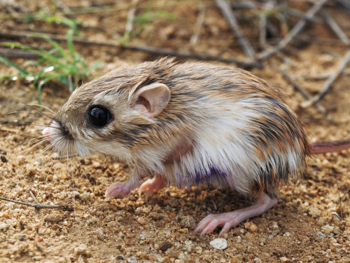

Investigación Actual
Impacto de la urbanización en libélulas del Desierto Sonorense
Los cambios en el paisaje, calidad y disponibilidad de agua, estructura de vegetación e incluso en temperatura debidos a la urbanización tienen consecuencias negativas sobre la fauna silvestre acuática. Esto cobra especial relevancia en regiones áridas con alto estrés hídrico como el Desierto Sonorense, y en insectos acuáticos y bioindicadores como las libélulas. En este proyecto queremos entender cómo es que la urbanización afecta a las comunidades de Odonata en el Río Santa Cruz y el Río Sonora del Desierto Sonorense.Macroinvertebrados acuáticos y cambios hidroclimáticos
Una de las consecuencias del cambio climático son fluctuaciones intensas en el flujo de ríos, con inundaciones severas y sequías prolongadas. En el suroeste de Estados Unidos, las sequías han reducido el flujo de las cuencas de la región. Estos cambios afectan las comunidades de macroinvertebrados acuáticos, y pueden llevar a la pérdida de biodiversidad. En este proyecto, en colaboración con el Servicio de Parques Nacionales, queremos explorar los impactos a largo plazo de estos cambios hidrológicos en macroinvertebrados acuáticos como bioindicadores en parques nacionales del suroeste de EUA.Investigación Previa

Dinámica poblacional de una libélula en una zona urbana.
La pérdida de ecosistemas acuáticos en zonas urbanas es provocada por la explotación de sus recursos y su contaminación. Esto ha llevado a la desaparición de poblaciones locales de fauna debido a las alteraciones de sus hábitats naturales por la urbanización. Una pequeña población de caballito escarlata (Hetaerina vulnerata) se encuentra en un hábitat aislado dentro del área urbana de la Ciudad de México, especie que se creía extirpada de la ciudad por la pérdida de su hábitat. Este proyecto, como tesis de maestría, se enfocó en conocer el estado actual de esta población de libélulas a través de su demografía.
Efecto del zacate buffel en roedores silvestres del Desierto Sonorense.
El zacate buffel (Cenchrus ciliaris) es un pasto africano que ha sido introducido ampliamente en zonas áridas alrededor del mundo para la ganadería, incluyendo al Desierto Sonorense. Sin embargo, este zacate se caracteriza por su capacidad de desplazar a las plantas nativas por su competitividad, ayudado por el desmonte que se utiliza para establecer praderas de buffel. El objetivo de este proyecto, como tesis de licenciatura, fue determinar cuál era el efecto de la presencia zacate buffel sobre la diversidad y poblaciones de la comunidad de roedores silvestres del desierto.Publicación: Guzmán-Ojeda et al., 2023
Todas las imágenes © Rocío Guzmán